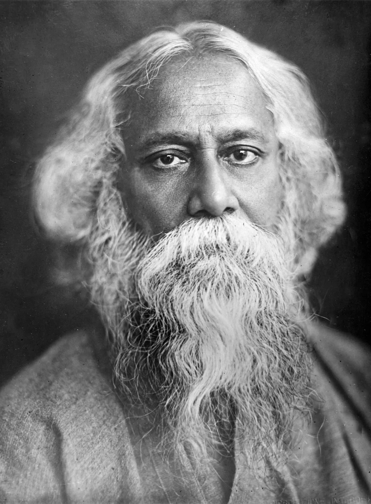

Gurudev Rabindranath Tagore FRAS (/rəˈbɪndrənɑːt tæˈɡɔːr/ (listen); Bengali: রবীন্দ্রনাথ ঠাকুর pronounced [rɔˈbindɾɔnatʰ ˈʈʰakuɾ];[1] 7 May 1861 – 7 August 1941) was a Bengali polymath who worked as a poet, writer, playwright, composer, philosopher, social reformer and painter.[2][3][4] He reshaped Bengali literature and music as well as Indian art with Contextual Modernism in the late 19th and early 20th centuries. Author of the "profoundly sensitive, fresh and beautiful" poetry of Gitanjali,[5] he became in 1913 the first non-European and the first lyricist to win the Nobel Prize in Literature.[6] Tagore's poetic songs were viewed as spiritual and mercurial; however, his "elegant prose and magical poetry" remain largely unknown outside Bengal.[7] He was a fellow of the Royal Asiatic Society. Referred to as "the Bard of Bengal",[8][3][4] Tagore was known by sobriquets: Gurudeb, Kobiguru, Biswokobi.[a] A Bengali Brahmin from Calcutta with ancestral gentry roots in Burdwan district[10] and Jessore, Tagore wrote poetry as an eight-year-old.[11] At the age of sixteen, he released his first substantial poems under the pseudonym Bhānusiṃha ("Sun Lion"), which were seized upon by literary authorities as long-lost classics.[12] By 1877 he graduated to his first short stories and dramas, published under his real name. As a humanist, universalist, internationalist, and ardent critic of nationalism,[13] he denounced the British Raj and advocated independence from Britain. As an exponent of the Bengal Renaissance, he advanced a vast canon that comprised paintings, sketches and doodles, hundreds of texts, and some two thousand songs; his legacy also endures in his founding of Visva-Bharati University.[14][15] Tagore modernised Bengali art by spurning rigid classical forms and resisting linguistic strictures. His novels, stories, songs, dance-dramas, and essays spoke to topics political and personal. Gitanjali (Song Offerings), Gora (Fair-Faced) and Ghare-Baire (The Home and the World) are his best-known works, and his verse, short stories, and novels were acclaimed—or panned—for their lyricism, colloquialism, naturalism, and unnatural contemplation. His compositions were chosen by two nations as national anthems: India's "Jana Gana Mana" and Bangladesh's "Amar Shonar Bangla". The Sri Lankan national anthem was inspired by his work.[16] Family history See also: Tagore family The name Tagore is the anglicised transliteration of Thakur.[17] The original surname of the Tagores was Kushari. They were Pirali Brahmin ('Pirali’ historically carried a stigmatized and pejorative connotation)[18][19] originally belonged to a village named Kush in the district named Burdwan in West Bengal. The biographer of Rabindranath Tagore, Prabhat Kumar Mukhopadhyaya wrote in the first volume of his book Rabindrajibani O Rabindra Sahitya Prabeshak that The Kusharis were the descendants of Deen Kushari, the son of Bhatta Narayana; Deen was granted a village named Kush (in Burdwan zilla) by Maharaja Kshitisura, he became its chief and came to be known as Kushari.[10]